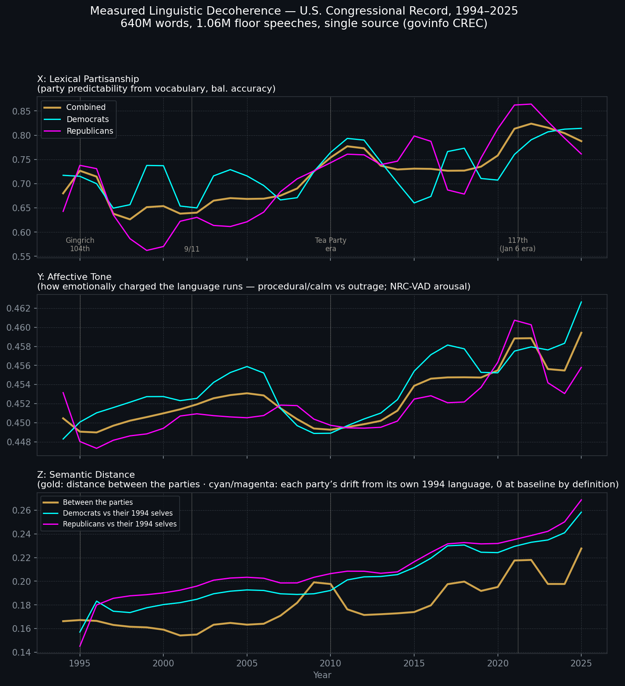

Torus Systems
New York, NY
Institutional market-making for prediction markets
The firm
Prediction markets are becoming real financial infrastructure, where regulated exchanges price measurable, discrete outcomes. The addressable market is a function of value proposition. A market must create value to attract market participants. Commodity futures paved the way, and now the only limitations are imagination and practicality.
Torus Systems provides the service every market needs: continuous, two-sided liquidity driven by truth-seeking algorithms, operating with live, intelligently processed empirical information.
We are 100% founder-owned and capitalized, we have no outside investors. We offer reliable two-sided market making subject to predetermined, market-specific performance benchmarks.
Scott Coulter

Scott M. Coulter is the founder and managing member of Torus Systems LLC. He is also the founder of Cowbird Capital LP, a New York based long/short equity fund.
He received a Bachelor's degree in Applied Mathematics from Harvard College, then a Master's degree in Applied Mathematics from the Harvard Graduate School of Arts and Sciences. Scott joined Blackstone in 2006 where he worked in New York as an analyst in the private equity group. He left Blackstone in 2009 to join Lone Pine Capital where he became a managing director investing across technology, healthcare, and business services. In 2017, Scott was the third Lone Pine partner to receive Lone Pine sponsorship to spin-out and launch Cowbird Capital.
After returning outside capital to Cowbird's investors in 2024, Scott served as a Senior Advisor to the Administrator of NASA in 2025. He was later appointed by the White House to be CIO of the Social Security Administration. Scott returned to New York in 2026 to found Torus Systems.
Venues
We provide institutional market making to the industry's leading platforms.
Kalshi
The first CFTC-regulated exchange dedicated to event contracts: elections, economics, weather, and beyond. The U.S. exchange path.
Polymarket
The world's largest prediction market, now open to U.S. institutions.
ForecastEx
The event-contract exchange founded by Interactive Brokers, sitting next to the rest of an institutional book.
The market
Every enterprise is in the business of risk management. Businesses pay dearly for certainty, which pads the margins of a bloated risk industrial complex: insurance and middle men.
Responsible fiduciaries require reliable counterparties to access the benefits of market-based risk pricing (i.e., prediction markets). Practically every industry stands to gain: transportation, commodities, consumer retail, healthcare; even frontier AI companies with their volatile infrastructure demands.
Putting a collar on unbounded uncertainty creates the foundation for capital allocation. Publicly traded risk markets enable CFOs to unlock more investable cash than ever before.
Our goal is to make prediction markets a standard institutional hedge.
Research
Two public studies sit behind the work. The math is the same instinct as the desk: look at the shape of a system, ignore the narrative.
Topology of Societal Decoherence
Data suggests the “left” and the “right” no longer speak the same language.
As social feeds pull left and right toward different words, the two sides slowly stop sharing a language. This is a visualization — our linguistic feasible space, our respective linguistic universes, are represented as topological manifolds (tori: donuts) — using data from a consistent platform: the floor of Congress (1981 through 2025). Here you can see that the right and left have separated like a failed emulsion. The mathematical description is a fiber bundle on a torus, decohering.
Here’s what you’re watching: each cloud is one party’s footprint in language-space — shared vocabulary on one axis, emotional register on another, word meaning on the third. Through the 1980s the two clouds interleave on a single surface: one language, weathering the Gulf War and Somalia without a tear. Scrub forward and they separate like oil from water — the Gingrich snap, then slowly through the 2000s, faster after 2010 — until what remains is two distinct tori, barely touching, at 5%.
The tori genuinely re-cohere slightly in the late 90s, shudder through 2009–12, tear violently in 2020–21, and end at “Shared Linguistic Feasible Space: 5%” — not the parametric version’s clean 0%, because the data says the maximum tear was the Jan-6-era Congress with a slight retreat since. I’d argue 5% is a more powerful ending than 0%: measured, not scripted, and quietly hopeful.
Then again, perhaps a torus isn’t the right shape for language at all. Speech isn’t inherently circular — it never owes us a return to where it started. A helix is the more natural form: it lets the data breathe and evolve instead of repeating itself — arguably a truer picture of a time series. Here it is:
Notice how long the braid simply holds — through Reagan, the Gulf War, Somalia, a classifier can barely tell the parties’ vocabularies apart. The fraying is already underway, though: by 1994 the shared space has quietly drifted to about 72%. Then the snap — the Gingrich Congress, when the Contract-with-America message machine handed each party its own vocabulary almost overnight and the braid jolts loose. It pulls briefly back together at 9/11 — the last genuine coherence in the record — then unwinds for twenty straight years, fraying through the Tea Party ramp until the strands of the Jan-6-era Congress barely touch. None of this is scripted: the winding is the measured data, recovering the history on its own.

Linguistic decoherence: because the Z-axis plots 1 − cosine similarity, it is an exact measure of divergence. When the Z-axis spikes (as seen clearly around the 2010 Tea Party era and the post-2020 117th Congress), it reveals that the two sides aren’t just using different vocabularies (which is what the X-axis measures). Instead, it shows that even after aligning their baseline languages, they are using the exact same words to mean entirely different things. The topological distance between their shared concepts is widening, indicating that the speakers are effectively talking past each other. For an intuitive explanation of the Z-axis — disconnected manifolds, the Procrustes rotation, and the angle between meanings — read the full breakdown →

Gold's Rally: A Topological Contextualization
Is gold's price spike a bubble or the real thing? A math tool that measures the shape of how markets move together. The shape looks completely normal, even though the price move was historic. Translation: a genuine, lasting repricing of gold against paper money, not a panic. For the technical reader: persistent homology of cross-asset correlations, 43rd-percentile normal. January 2026, 12 pages.
Read the studyInternships
We offer unpaid internships with a path to employment. If you’re interested in creating prediction markets, submit your resume directly below, or email it to scott@topdogstudios.com.